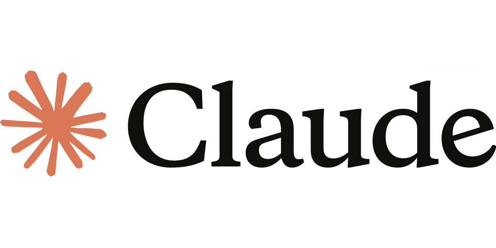

Claude Sonnet 4.5
Anthropic
Самая мощная модель для сложных задач. Отлично понимает контекст, пишет чистый код и объясняет решения. Подробнее в официальной документации.
✓ Плюсы:
- Идеальна для рефакторинга и архитектуры
- Понимает сложные зависимости в коде
- Даёт развёрнутые объяснения
✗ Минусы:
- x6 кредитов — дорого для простых задач
- Иногда слишком многословна
Когда юзать: Сложные баги, проектирование архитектуры, code review